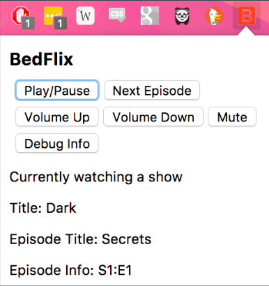
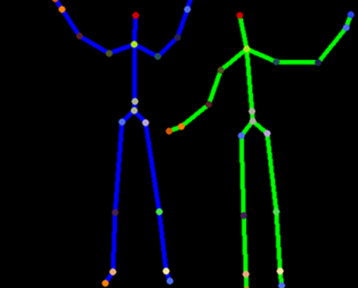

home
BedFlix
BedFlix is a chrome extension / kinect application that allows you to control Netflix with gestures. It is fully open-sourced, check out the repository
here
. If you are interested in using it, download the extension from the chrome web store
here
.

